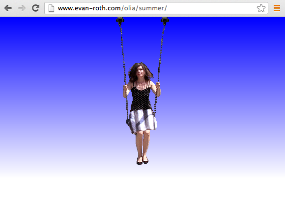
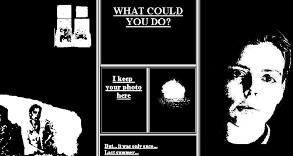
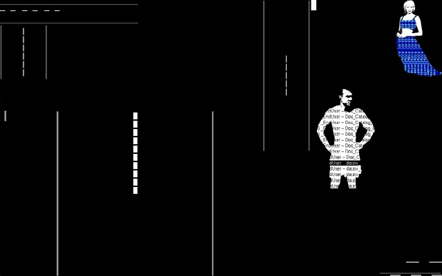
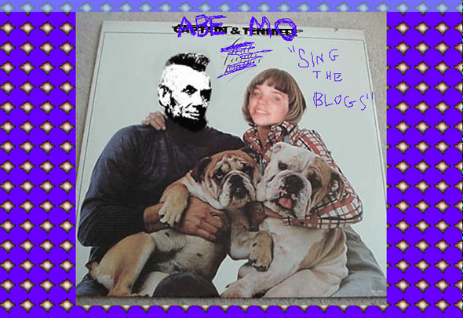

Chapter
ENTITITES ARCHIPELAGOES
Project
Artist
Year
Format

"Lialina's increasing awareness of the interplay between technological context and artwork is at the forefront of her latest work, Summer (2013). The piece is a short animated loop of the artist swinging from a playground swing that is seemingly fixed to the top of the browser window."

"My boyfriend came back from the war is one of the first engaging hyper text net art narrative in which the story unfolds by clicking on images and texts in various sized windows within the frame. Created by Olia Lialina in 1996, this work will always be considered a classic."

"Agatha Appears was started as a pure art project, funny story about two young people who meet at night. Story combines principles of stage design, film montage and html documents, common internet stereotypes and net critics. It imitates the process of teleportation, but in the process of making Agatha appeared a new server http://www.teleportica.org, where datas of real people, who want to be teleported are stored."

"Selecting the postings that comprise the greatest "hits" of some of their favorite blogs, Abe Linkoln & Marisa Olson "sing the blogs" in order to address these questions. While Linkoln's posts speak to musical genres at large, Olson's posts seek to find harmony with specific models. Both question the status of the author's voice..."
"The whole "album" is presented as a form of reblog, in an effort to self-reflexively dive into the meme culture that is its subject. The artists' blog gets situated as the site of a happening."